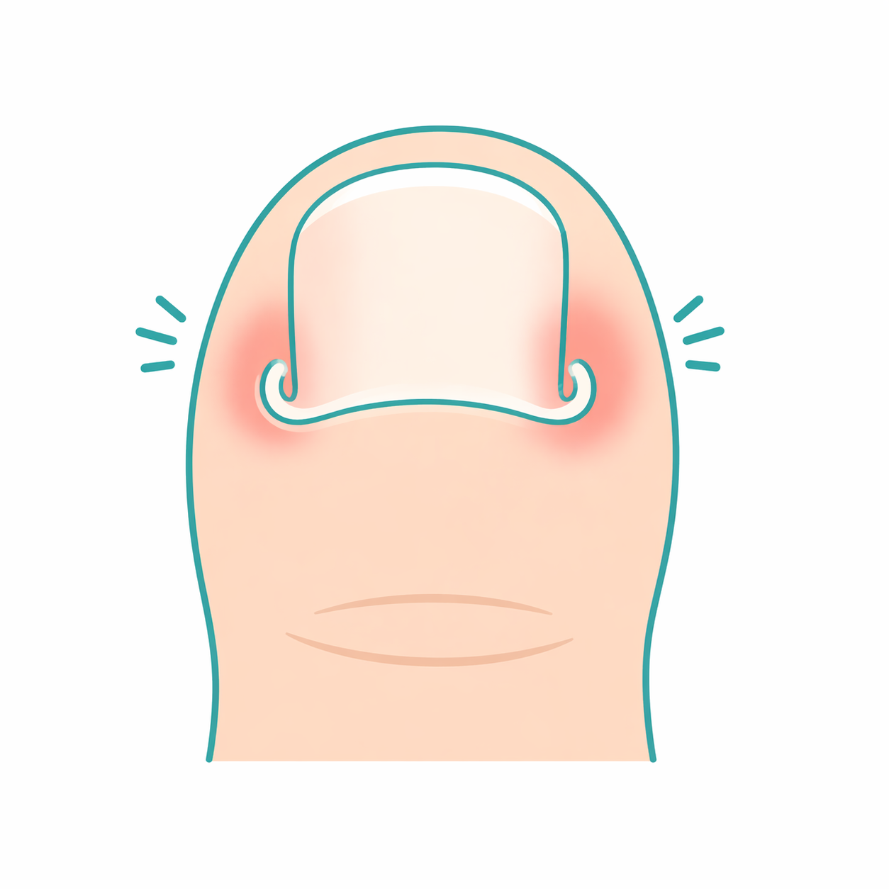
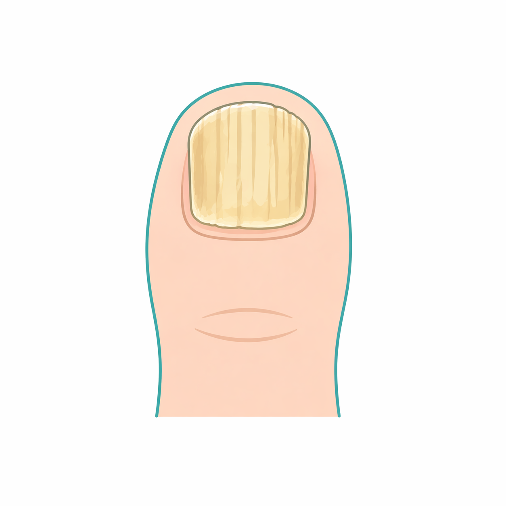
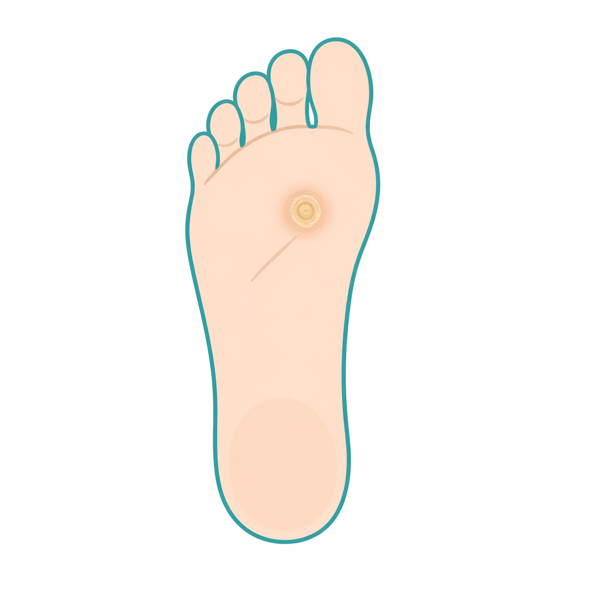
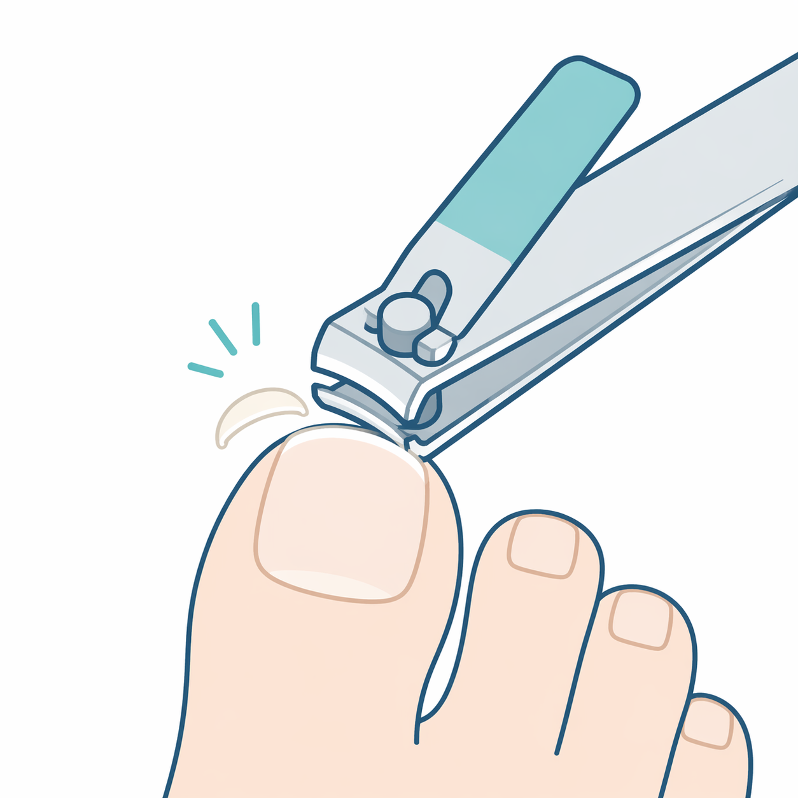
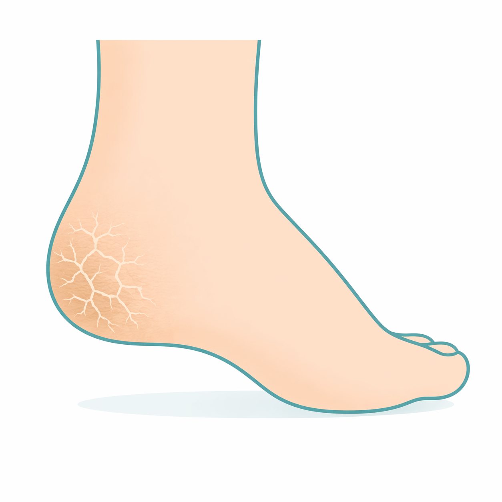
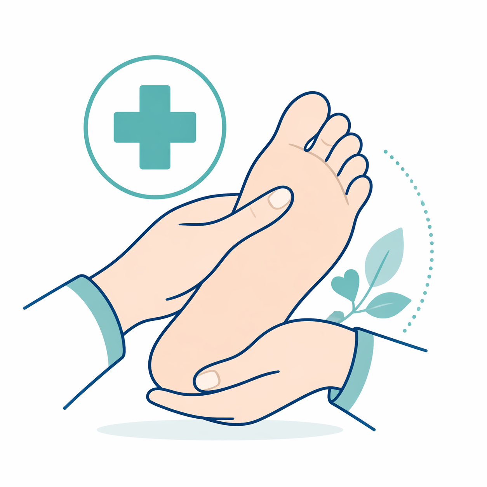
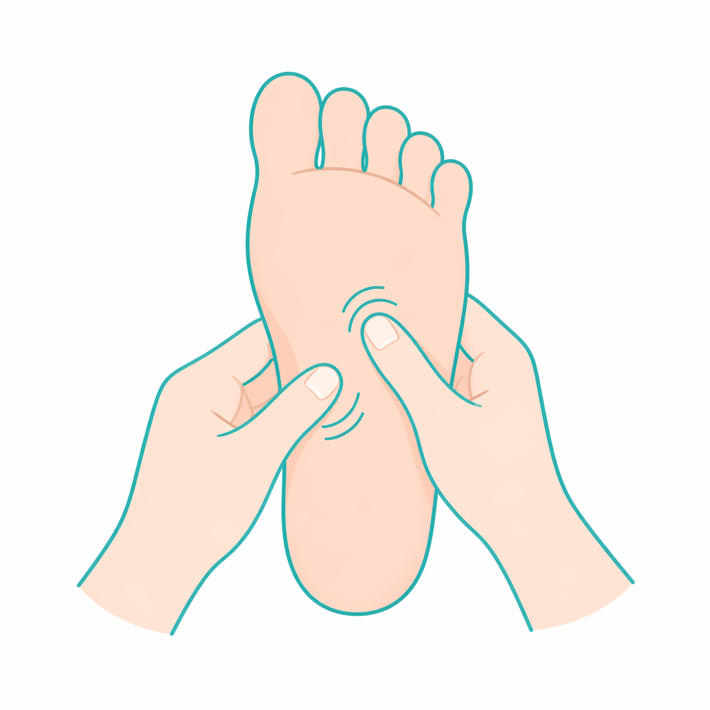
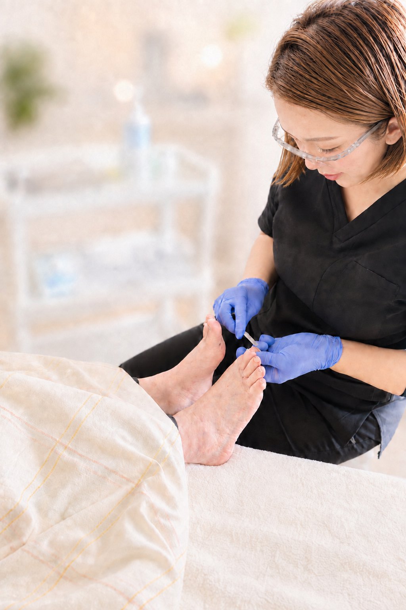
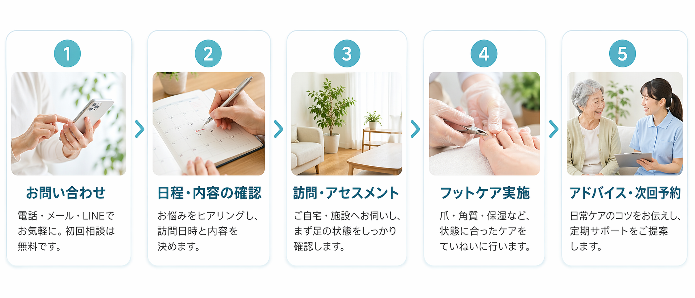

訪問フットケア
水の環
みずのわ
看護師歴20年以上の代表が、ご自宅・施設へ訪問
厚い爪・巻き爪・タコ・魚の目。ご家族からもご相談ください。
爪切りのみ3,000円／基本コース5,500円（税込）
河内長野市内は交通費無料。肥厚爪・変形爪などは別料金です。
「親の爪が厚くて切れない」「足に手が届かない」。
ご本人・ご家族の、足のお困りごとをご相談ください。

爪が皮膚に食い込んで痛みが出る状態です。放置すると炎症や歩行困難につながることも。爪の形・生え方を観察し、状態に合ったケアで日常生活をサポートします。
ケア内容・料金を見る →

「親の爪が厚くなり、普通の爪切りでは切れない」。厚さや変形の状態に合わせて、専門器具で整えます。通常の爪切りとは料金が異なります。
ケア内容・料金を見る →

長期間の圧迫・摩擦で皮膚が硬くなった状態です。タコは広い範囲、ウオノメは芯をもつのが特徴。専用器具でできる限り負担を抑えながら除去し、再発防止のアドバイスも行います。
ケア内容・料金を見る →

「かがめず、足の爪に手が届かない」「見えにくくて切るのが不安」。ご自身で爪切りが難しい方のご自宅へ伺い、爪のカット・ファイリングを行います。
ケア内容・料金を見る →

かかとや足裏の乾燥・ひび割れは、皮膚バリアが崩れて細菌感染につながるリスクがあります。保湿ケアを丁寧に行い、日常でのセルフケア方法もお伝えします。
ケア内容・料金を見る →

糖尿病による神経障害・血流障害で、足の小さな傷が重症化するリスクがあります。看護師が医療的な視点で足の状態を観察しながら、安全に配慮してケアします。
ケア内容・料金を見る →

足裏の反射区を刺激することで、全身の血流促進・疲労回復・自律神経の調整をサポートします。リラクゼーション効果も高く、ケアと組み合わせることでより効果的です。
ケア内容・料金を見る →
個人・ご家族向けと、施設向けの料金をご案内します。
どのコースか迷う場合は、お困りごとからご相談ください。

はじめまして。訪問フットケア「水の環」代表の村瀬環水です。
看護師として20年以上、病棟・訪問看護・施設看護の現場で、多くの方の暮らしに関わってきました。その中で感じてきたのは、足のお手入れが、日々の生活を支える大切なケアだということです。
「自分では爪を切れない」「家族の足が気になる」。そんなお困りごとを伺い、足の状態を見ながら、一人ひとりに合わせて丁寧にケアします。
ご自宅でも、施設でも。慣れ親しんだ場所で足のケアを受けられるように。ご本人とご家族の思いに寄り添い、その人らしい暮らしを足元から支えていきたいと考えています。
代表 村瀬 環水
足のお困りごとを相談する →本サービスは保険適用外の訪問フットケアです。医療行為は行いません。足の状態によっては医療機関への受診をご案内します。
看護師だからできる、訪問フットケアがあります。
まずはLINEまたはお電話で、お困りごとをお知らせください。
ケア道具は持参します。ご利用時はタオルと、座れる椅子やベッドをご用意ください。

南大阪を中心に、ご自宅・施設へ訪問します。
エリア外もお気軽にご相談ください。
市内全域に訪問可能です。交通費については別途ご相談ください。
市内全域に訪問可能です。交通費については別途ご相談ください。
上記以外のエリアもお気軽にご相談ください。状況に応じて柔軟に対応いたします。
河内長野市内は交通費無料。それ以外のエリアは交通費を別途ご相談となります。詳しくはお気軽にお問い合わせください。
介護施設・デイサービス・グループホームなどへの定期訪問も承っています。施設担当者様はお気軽にご相談ください。
お問い合わせの前に、よくいただく質問をまとめました。
LINEでは、次の3点をお送りください。
① お住まいの市 ② 足のお困りごと ③ 訪問のご希望
例：「河内長野市です。母の足の爪が厚く、自宅でケアをお願いしたいです。」
写真を添えたご相談もできます。返信は営業時間内に行います。
お電話でのご相談：080-2010-1849